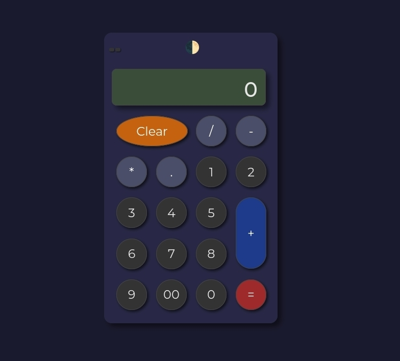
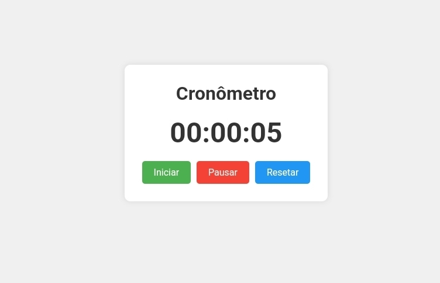

Meus Projetos

Projeto 1
Calculadora web interativa com funcionalidades básicas e opção de alternar entre tema claro e escuro. A calculadora apresenta uma interface amigável e responsiva, com botões estilizados e efeitos visuais de interação.
Projeto 2
Aplicativo web simples e intuitivo para conversão de temperatura entre Celsius e Fahrenheit e vice-versa

Projeto 3
Este é um projeto de cronômetro simples desenvolvido com HTML, CSS e JavaScript puro. O cronômetro permite medir o tempo com precisão de segundos e oferece controles básicos de iniciar, pausar e resetar.
Projeto 4
Este projeto consiste em um aplicativo web para conversão bidirecional entre números decimais e números romanos. A interface é intuitiva e permite conversões rápidas com validação de entrada.